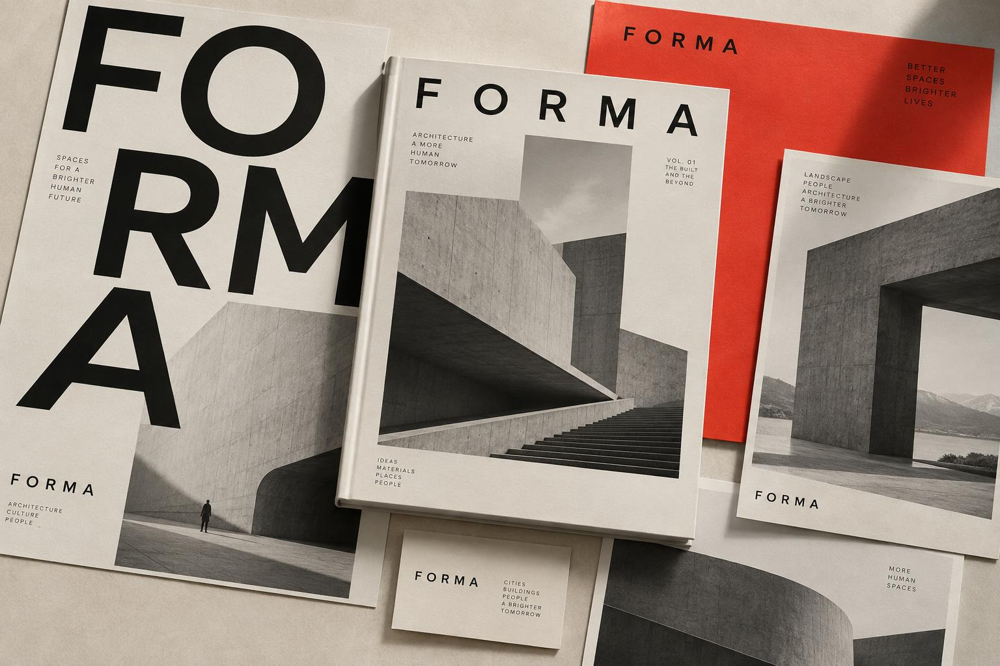

FORMA.
A considered identity for a different kind of architecture practice. Quiet confidence. Unmistakable form.

The thinking
behind the work.
The challenge
How could an architecture brand communicate precision without losing its human side? FORMA is a fictional practice created as a studio exploration of this question.
The approach
The direction pairs expressive scale with a disciplined grid. Architectural imagery creates depth, tactile ivory surfaces add warmth, and a single red accent brings energy to an otherwise restrained identity.
The scope
- Visual identity concept
- Editorial art direction
- Print campaign exploration
The outcome
A cohesive visual direction exploring how a clear identity can carry across print and brand communications. This is a self-initiated concept, with AI-assisted presentation imagery; it was not commissioned by a client and has no commercial performance results.